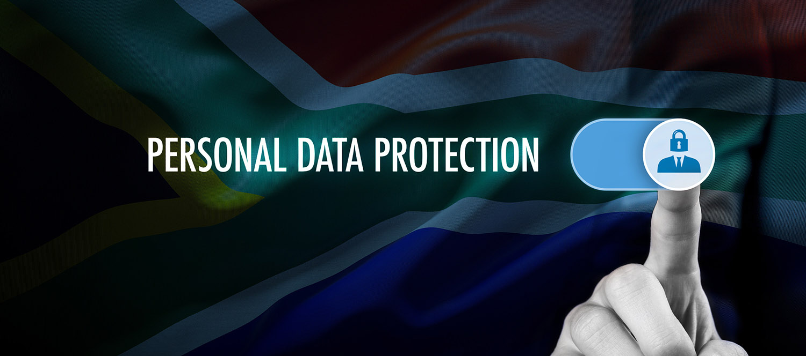

POPI is South Africa’s data privacy law and it stands for the Protection of Personal Information Act, 2013. It is sometimes also referred to as POPIA. It governs when and how organisations collect, use, store, delete and otherwise handle personal information

What is Personal Information
Personal information is
information that can identify a
person or that is of a sensitive nature. Personal information may include
identity / passport numbers, date of birth, email address, phone number,
physical address, gender, marital status, criminal record,salary information,
employment history, financial information, educational or even biometric information.
The image below demostrates some examples of personal information
Service providers are not allowed to share your personal information without your knowledge and consent
Organizations have now included a privacy clause in their contracts, it is to your best interest to read it carefully before signing anything
Organizations are only allowed to collect enough information for their use, nothing more and nothing less
You are allowed to ask anyone with your information how they got it and they are legally obliged to respond
How Can You Protect Your Personal Information
Share as little personal information as possibly required
Always ascertain the identity of anyone requesting your personal information before giving it out
Never share passwords/ pin numbers on WhatsApp or via SMS. If you absolutely have to share your pin or password, it is best you call the person to ensure you are speaking to the right person
Rememmber it is totally within your legal right as a citizen of the Republic of South Africa to not disclose any personal information to anyone
Privacy
Privacy
Privacy is the right of a
person to control their
own personal information
and conduct their
personal affairs free from
unwanted obtrusion. The
right to privacy is a right
that is enshrined in the
constitution
Privacy Tips
Disclose the minimum
allowable personal
information for your
required action.
Read a websites privacy
policy to determine how
your data will be shared.
Update your social media
privacy settings to limit
publically shared
information.